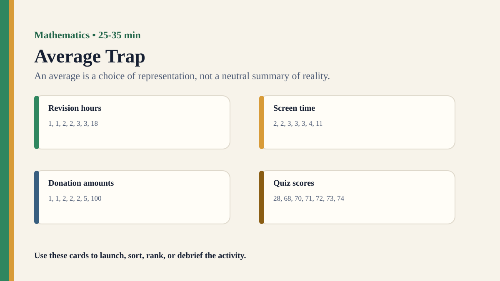

Premium draft resource
Average Trap Classroom Run Kit
Students compare mean, median, and mode for skewed datasets and evaluate which average supports the most responsible claim.
One-Minute Teacher Brief
Students compare mean, median, and mode for skewed datasets and evaluate which average supports the most responsible claim.
Big idea: An average is a choice of representation, not a neutral summary of reality.
Student Prompt
Inspect Average Trap Stimulus A. Record one first claim, the evidence you used, your confidence, and what would make you revise.
Concrete Stimulus Packet
Stimulus
Average Trap Stimulus A
Student-facing stimulus 1: Revision hours: 1, 1, 2, 2, 3, 3, 18. Work the example, then decide whether it gives a pattern, a model, a calculation, or a proof.
Students inspect this exact card first and commit to a claim before hearing anyone else.Stimulus
Average Trap Stimulus B
Student-facing stimulus 2: Screen time claim: mean looks high, median looks moderate, mode shows the most common routine. Work the example, then decide whether it gives a pattern, a model, a calculation, or a proof.
Use this for comparison, a second round, or a partner challenge.Stimulus
Average Trap Reveal / Twist
Student-facing stimulus 3: Screen time claim: mean looks high, median looks moderate, mode shows the most common routine. Work the example, then decide whether it gives a pattern, a model, a calculation, or a proof.
Teacher reveal: connect the changed response to the big idea — An average is a choice of representation, not a neutral summary of reality.Actual Lesson Questions
| # | Question for students | Teacher key / cue |
|---|---|---|
| 1 | After inspecting Average Trap Stimulus A, what is your first knowledge claim? | Teacher cue: look for a clear claim, not just a description. |
| 2 | Which exact detail from Average Trap Stimulus A did you use as evidence? | Teacher cue: students should name visible words, data, source features, method features, or contextual clues. |
| 3 | What did you infer beyond the evidence? | Teacher cue: this is where assumptions, framing, models, or perspective usually appear. |
| 4 | How confident are you: 50%, 60%, 70%, 80%, 90%, or 100%? | Teacher cue: confidence is data for the debrief, not a grade. |
| 5 | What missing information would most improve the knowledge claim? | Teacher cue: push for method, source, context, comparison, or definitions. |
| 6 | How does choosing a summary statistic shape knowledge? | Teacher cue: students should move from the classroom example to a general TOK issue. |
Student Task
Use the stimulus cards to complete the observation/inference/evidence/confidence grid, then answer one TOK knowledge question connected to Mathematics.
Teacher Key / Reveal
The key move is not the “right answer”; it is the moment students see how an average is a choice of representation, not a neutral summary of reality.
- Strong response: separates observation from inference.
- Strong response: names a method, source, model, language choice, context, or perspective.
- Strong response: revises confidence when new evidence or a new criterion appears.
- Weak response: gives only opinion or says “it depends” without criteria.
Classroom materials
Printable Pack and Cards
Open the classroom resource pack for stimulus cards, CSV card deck, and the activity visual prompt.
Visual Prompt

Setup Checklist
- Choose skewed datasets where one large value pulls the mean away from most cases.
- Ask students which number they would put in a headline before calculating all averages.
Ready-to-Use Examples
- Revision hours: 1, 1, 2, 2, 3, 3, 18.
- Screen time claim: mean looks high, median looks moderate, mode shows the most common routine.
Run Resources
- Average comparison sheet: mean, median, mode, purpose, audience, and possible misuse.
- Headline cards using each average to support a different conclusion.
Teacher Language
- All three averages can be correct; the TOK question is which one responsibly represents the situation.
- What does this number make visible, and what does it hide?
Sample Student Output
- The mean was mathematically correct but made most students look unlike the typical case.
- The median was better for a typical value, but the mean was useful for total resource planning.
Procedure
- Give students a skewed dataset and ask them to describe a typical value.
- Groups calculate or identify the mean, median, and mode.
- Students match each average to a possible headline or policy claim.
- Groups decide which average is most responsible for the audience and purpose.
- Debrief why one correct number can create a partial picture.
Debrief Questions
- Knowledge question: When does a mathematical summary become misleading?
- Who decides which average is most relevant?
- Can a number be accurate but unfair?
Adaptations
- Support: give pre-calculated averages.
- Challenge: ask students to design a dataset where the three averages tell three different stories.
Extension Tasks
- Students find a public average and ask whether mean, median, or mode would be more responsible.
- Compare average choice with graph scale choice.